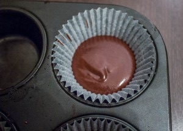
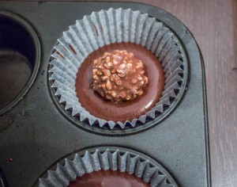
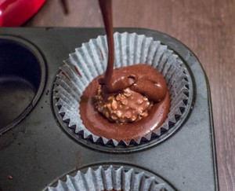
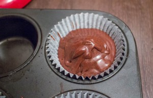
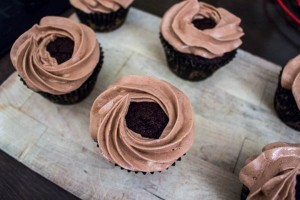
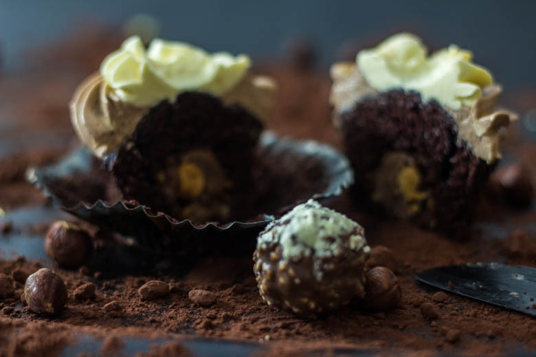
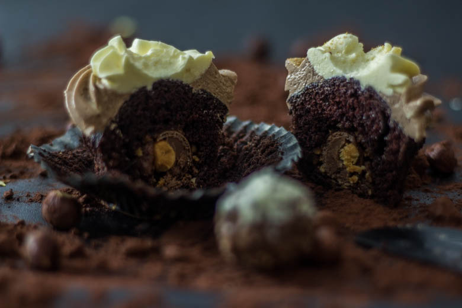
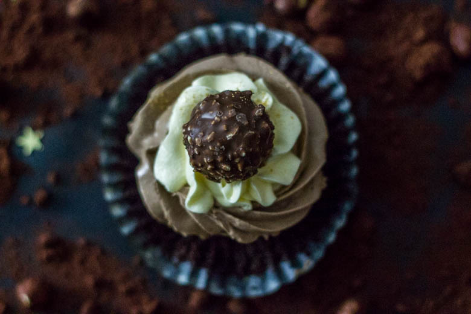

Cupcakes Ferrero Rocher Nutella

C’est parti pour une nouvelle recette de cupcakes!! Et attention, pas n’importe laquelle car il s’agit de la recette des cupcakes Ferrero Rocher glaçage Nutella!
Certains ont déjà vu cette photo sur ma page facebook, il est temps maintenant de vous délivrer la recette!! Je voulais à tout prix faire des cupcakes pour Noël et je pense que les Ferrero Rocher s’y prêtent plutôt bien 😉
Comme vous pouvez le voir sur la photo j’ai choisi de faire deux glaçages différents! Un à la vanille et l’autre au Nutella 😀 Il s’agit d’un glaçage au beurre à la meringue suisse qui est pour moi sans hésiter le meilleur glaçage qui soit! Je vais me répéter mais pour moi le glaçage au beurre et vraiment trop écœurant, trop lourd alors que celui-là est crémeux, « léger », très agréable à manger! Vous pouvez d’ailleurs trouver un article détaillé sur le glaçage au beurre à la meringue suisse ICI.
J’ai voulu faire une petite vidéo pour cette recette mais hélas je m’y suis mal prise, mais il est prévu que j’en fasse une très prochainement! 😉
Je vous laisse avec la recette des cupcakes Ferrero Rocher-Nutella et vous m’en direz des nouvelles 🙂
Ingrédients
- Farine - 140g
- Sucre - 220g
- Cacao en poudre (70%cacao) - 45g
- Bicarbonate de sodium - 1 càc
- Levure chimique - 1 càc
- Sel - 1 pincée
- Beurre fondu - 115g
- Oeufs - 2
- Extrait de vanille - 1 càc
- Eau chaude - 125ml
- Beurre mou - 460g
- Sucre - 260g
- Nutella - 150g
- Blanc d'oeufs à temp ambiante - 8
Instructions
- Dans le bol de votre robot verser les ingrédients secs (farine-cacao-sucre-levure-bicarbonate de sodium-sel)
- Homogénéiser l'ensemble en mélangeant bien
- Dans un autre bol mélanger le beurre fondu, les œufs et l'extrait de vanille
- Verser ce mélange dans le bol de votre robot en mélangeant les ingrédients secs et les ingrédients liquides
- Tout en continuant de mélanger, verser l'eau chaude
- On obtient une pâte assez liquide mais c'est tout à fait normal
- Mettre les caissettes dans les moules à cupcakes
- Préchauffer le four à 180°
- Verser de la pâte dans le fond de la caissette
- Poser un Ferrero au centre (surprise garantie)
- Recouvrir le Ferrero jusqu'au 2/3 de la caissette (ATTENTION à ne pas trop remplir la caissette car ça risquerait de déborder pendant la cuisson!!)
- Cuire à 180° pendant 20 minutes (entre 18 et 22 minutes selon votre four)
- Une fois cuits laisser les cupcakes refroidir entièrement et commencer la préparation du glaçage pendant ce temps
- Étape 1 : Faire monter les blancs en neige avec le sucre au dessus d'une source de chaleur.
- Étape 2 : Faire refroidir la meringue et incorporer le beurre
- Étape 3 : Glacer vos cupcakes








Les tips de la communauté
Recette très séduisante visuellement avec des retours positifs sur le goût. Les commentaires célèbrent l'originalité de l'insertion du Ferrero Rocher et la qualité des photos, bien que certains trouvent le glaçage très sucré.
Astuces
- Le bicarbonate allège le gâteau et permet à la pâte de lever
- Utiliser un glaçage à la meringue suisse moins sucré que la version beurre
- Sortir les cupcakes du frais 30 min avant de servir pour que le glaçage se ramollisse
- Goûter le glaçage avant de glacer pour ajuster si besoin
Variantes suggérées
- Créer une version Kinder Bueno avec un glaçage adapté
- Ajouter des Ferrero Rocher mixés au glaçage pour plus de saveur
- Remplacer le glaçage beurre par une crème chantilly-mascarpone
Ajustements signalés
- Le glaçage à la meringue suisse n'a parfois pas assez de goût Nutella, ajouter plus de Nutella si besoin
- Les quantités de Nutella dans le glaçage pourraient être augmentées pour plus de saveur